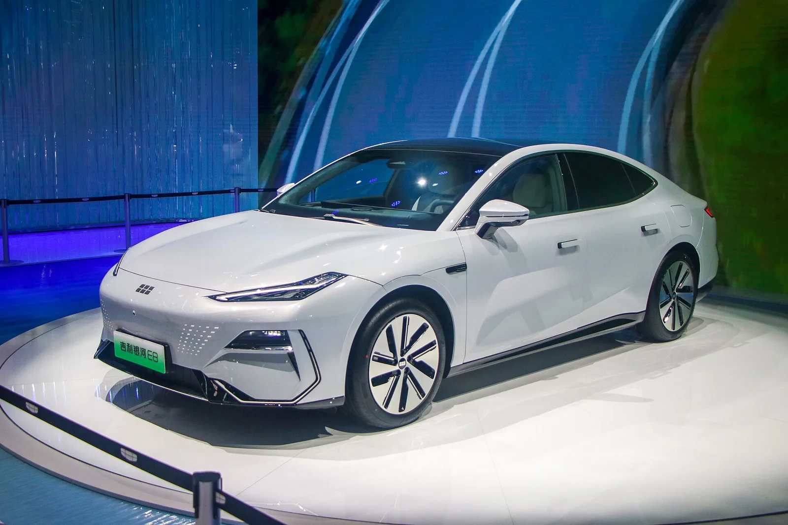

▲ 갤럭시 시리즈가 상반기 약 52만 대로 그룹 실적을 이끌었다 ⓒ Wikimedia Commons
지리자동차그룹이 상반기에 142만 대를 팔았습니다. 사상 최대입니다.
다만 더 눈여겨볼 숫자는 따로 있습니다. 대당 이익이 6,806위안으로 전년 대비 45% 올랐습니다.
많이 판 게 아니라 남기고 팔았다는 뜻입니다.
1. 실적표
| 항목 | 수치 | 전년 대비 |
|---|---|---|
| 판매 | 142만 대 | 사상 최대 |
| 매출 | 1,736억 위안 | +15% |
| 영업이익 | 96억 8,000만 위안 | +46% |
| 매출총이익률 | 17.9% | — |
| 대당 이익 | 6,806위안 | +45% |
| 보유 현금 | 695억 6,000만 위안 | 6월 30일 기준 |
| R&D | 90억 6,000만 위안 | +8% |
매출은 15% 늘었는데 영업이익은 46% 늘었습니다. 이익 증가율이 매출 증가율의 3배입니다. 규모가 커지면서 단위 비용이 내려가는 구간에 들어섰다는 신호입니다.
2. 대당 이익 6,806위안이라는 숫자
중국 자동차 시장은 오랫동안 출혈 경쟁으로 설명돼 왔습니다. 팔수록 손해를 보는 업체가 적지 않았습니다.
| 가능한 원인 | 내용 |
|---|---|
| 믹스 개선 | 고가 브랜드(지커) 비중이 늘었다 |
| 수출 확대 | 해외 판매가 내수보다 마진이 높다 |
| 부품 공용화 | 플랫폼 통합으로 원가가 내려간다 |
| 규모의 경제 | 142만 대라는 물량 자체가 협상력이 된다 |
두 번째 항목이 이번 실적의 핵심으로 보입니다. 수출이 158% 늘었기 때문입니다.
다만 6,806위안은 절대 기준으로 크지 않습니다. 약 140만 원입니다. 대당 이익이 이 수준이라는 것은 여전히 박리다매 구조라는 뜻이기도 합니다.
3. 수출 158%가 만든 것
| 항목 | 수치 |
|---|---|
| 상반기 수출 | 47만 4,000대 |
| 증가율 | +158% |
| 기존 연간 목표 | 64만 대 |
| 상향된 목표 | 92만 대 |
| 전체 판매 대비 수출 비중 | 약 33% (47.4만 / 142만) |
연간 목표를 64만에서 92만으로 올렸습니다. 44% 상향입니다. 상반기에만 47만4,000대를 채웠으니 기존 목표는 이미 의미가 없어진 상황입니다.
수출 비중 33%는 중국 완성차로서는 높은 편입니다. 내수 경쟁이 격화되면서 해외로 활로를 찾는 흐름이 실적으로 확인된 사례입니다.
이 흐름은 국내에도 무관하지 않습니다. 지리 산하 브랜드 중 볼보와 폴스타는 이미 국내에서 판매 중이고, 지커도 진출했습니다. 그룹 차원의 수출 확대는 국내 시장에서의 물량과 라인업 배정에도 영향을 줍니다.

▲ 지커는 상반기 17만8,000대 이상을 팔아 그룹의 약 12.5%를 담당했다
4. 브랜드별로 나눠 보면
| 브랜드 | 판매 | 그룹 내 비중 |
|---|---|---|
| 갤럭시 | 약 52만 대 | 약 36.6% |
| 지커 | 17만 8,000대 이상 | 약 12.5% |
| 링크앤코 | 14만 4,000대 이상 | 약 10.1% |
세 브랜드를 합쳐도 약 59%입니다. 나머지 41%는 지리 본 브랜드와 볼보·폴스타·로터스·스마트 등 다른 계열이 채웁니다.
지리 그룹의 강점이자 약점이 이 구조입니다. 브랜드가 많으면 시장별·가격대별 대응이 유연해집니다. 대신 브랜드 간 경계가 흐려지고 개발비가 분산됩니다.

▲ 볼보와 폴스타도 지리 계열로, 그룹 전략의 영향을 받는다
5. R&D 비중이 내려간 것
| 항목 | 수치 |
|---|---|
| R&D 지출 | 90억 6,000만 위안 (+8%) |
| 매출 대비 비율 | 5.2% |
| 전년 대비 | 0.3%p 하락 |
금액은 8% 늘었는데 매출 대비 비율은 내려갔습니다. 매출이 15% 늘었기 때문입니다.
이 지표는 양면으로 읽힙니다. 개발 효율이 올라갔다고 볼 수도 있고, 투자가 매출 성장을 따라가지 못한다고 볼 수도 있습니다.
지리는 최근 전고체 배터리 시범 적용을 예고했습니다. 에너지밀도 최대 500Wh/kg, 수명 100만 km를 내걸고 내년부터 지커·볼보·폴스타 등에서 시범 적용에 들어갑니다. 이런 장기 과제를 안고 있는 상황에서 R&D 비율 하락은 눈여겨볼 지점입니다.

▲ 갤럭시 시리즈는 그룹 판매의 3분의 1 이상을 담당한다
6. 정리
지리자동차그룹이 2026년 상반기 142만 대를 팔아 사상 최대를 기록했습니다. 매출 1,736억 위안(+15%), 영업이익 96억8,000만 위안(+46%)입니다.
대당 이익이 6,806위안으로 45% 올랐습니다. 매출총이익률은 17.9%입니다. 브랜드별로는 갤럭시 약 52만 대, 지커 17만8,000대 이상, 링크앤코 14만4,000대 이상입니다.
수출은 47만4,000대로 158% 급증했고, 연간 목표를 64만 대에서 92만 대로 상향했습니다. R&D는 90억6,000만 위안으로 8% 늘었지만 매출 대비 비율은 5.2%로 0.3%p 내려갔습니다.